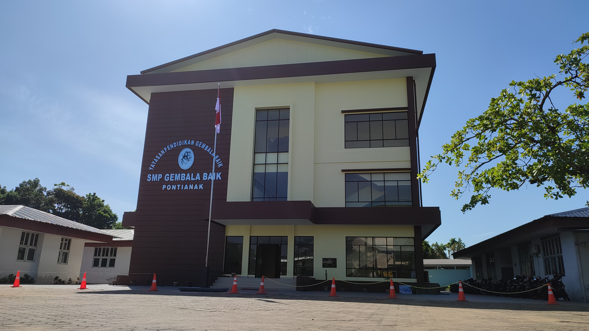
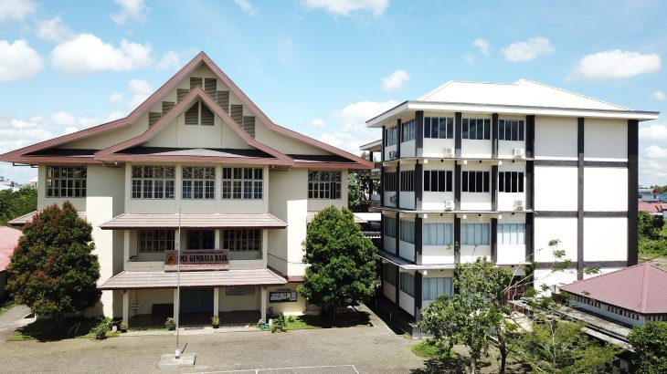
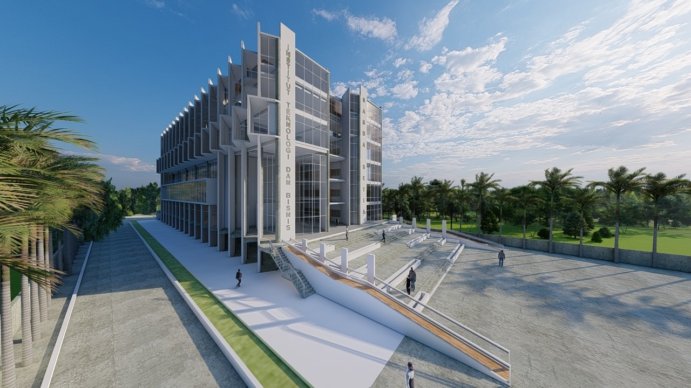

Education
|  |  |  |
| I spent my education from kindergarten to high school at Gembala Baik. This school provided a strong foundation in my educational journey and shaped the values and skills I have today. | In high school, I majored in social studies and got top 3 in all semesters. | Now, I'm a university student at ITBSS and majoring STI. I chose this major because I am interested in technology and web design. |